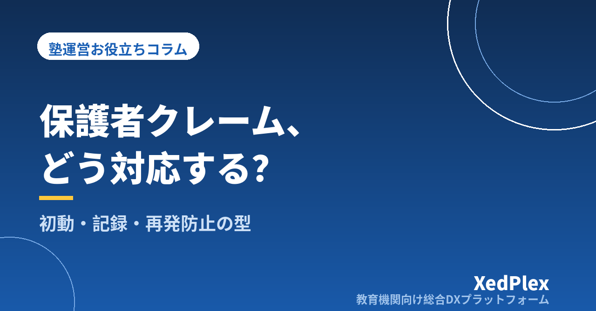

塾への保護者クレーム対応の手順｜初動・聞き取り・記録・再発防止までの型

授業が終わって片づけをしていると、スマートフォンが鳴る。画面に出た保護者の名前を見た瞬間、心当たりが浮かぶ。「先週の振替の件なんですけど……」──個人塾・小規模塾の塾長なら、この胃が縮む感覚を一度は経験しているはずです。
大手塾なら本部やマニュアルがありますが、ひとり塾長の場合、受けるのも、考えるのも、答えるのも全部自分です。しかも多くは授業前後の疲れた時間帯にやってきます。その場の勢いで謝りすぎたり、逆に説明しすぎて相手をさらに怒らせたり。あとから「もっと違う言い方があった」と反省する。この繰り返しは、経営そのものを消耗させます。
ただ、クレーム対応はセンスではなく手順で安定します。この記事では、初動の受け方から聞き取り、記録の残し方、再発防止までを、小さな塾でも回せる型として整理します。なお、法的な判断が必要な場面については、最後に触れるとおり弁護士など専門家への相談が前提です。
クレームを「苦情」ではなく「情報」として扱う
最初に、対応の姿勢を決めておきます。保護者から連絡が来るのは、多くの場合、不満をぶつけたいからではなく、状況が分からなくて不安だからです。「うちの子、ちゃんと通えていますか」「本当に成果は出るんですか」という不安が、具体的な出来事をきっかけに言葉になって出てくる。そう捉えると、対応の目的が「鎮める」ことから「不安の中身を特定する」ことに変わります。
塾に寄せられる声は、だいたい次の4つに分けられます。
| 類型 | よくある内容 | 対応の重心 |
|---|---|---|
| ①事実確認型 | 「振替の日程が聞いていた話と違う」「請求金額が合わない」 | 記録を確認し、事実を返す |
| ②不安・成果型 | 「点数が上がらない」「宿題を見てもらえていないのでは」 | 現状の共有と次の一手の提示 |
| ③対応・態度型 | 「講師の言い方がきつかった」「連絡が来ない」 | 聞き取りと謝罪の範囲の見極め |
| ④要求型 | 「担当を替えてほしい」「返金してほしい」 | その場で答えず、規定に照らす |
類型が違えば、答え方も準備も違います。電話を取った瞬間に「これはどれか」を仕分けるだけで、応答は落ち着きます。とくに①は記録さえあれば数分で解決する一方、記録がなければ水掛け論になります。
初動：最初の一本の電話で決まること
初動でやることは3つだけです。逆にいえば、それ以外はこの段階でやらないほうがうまくいきます。
1. 最後まで聞く（さえぎらない）
説明したい気持ちは自然ですが、相手が話し終える前の反論は、ほぼ確実に火に油を注ぎます。まずは相づちと「そうでしたか」「お知らせいただきありがとうございます」で受け、メモを取りながら聞き切る。この数分を我慢できるかどうかで、その後が大きく変わります。
2. 謝る範囲を切り分ける
ここが一番のつまずきどころです。「すべて申し訳ありません」と全面的に謝ると、事実確認前に塾側の非を認めた形になり、あとで説明しづらくなります。かといって謝らなければ冷たく映ります。切り分けの目安は次のとおりです。
- すぐ謝ってよいこと：不安な思いをさせたこと、連絡が行き届かなかったこと、時間を取らせたこと
- 確認してから答えること：何が起きたか、誰の判断だったか、金額や日程が正しいか、今後どうするか
言い方の例としては、「ご心配をおかけして申し訳ありません。事実関係を担当と確認したうえで、改めてご連絡させてください」。前半で気持ちを受け止め、後半で事実確認の時間を確保しています。
3. その場で結論を出さない
返金・担当変更・特別対応などの要求には、その場で答えないのが原則です。焦って「分かりました」と言ってしまうと、それが以後の基準になります。「規定を確認して、○日までにご連絡します」と期限を切って持ち帰る。持ち帰るときは、いつ・どの手段で連絡するかを必ず伝え、その約束は何があっても守ります。約束した折り返しが遅れることが、二次的なクレームの最大の原因です。
①いつ・誰から・どの手段で ②言われたこと（相手の言葉のまま） ③こちらが約束したこと（期限つき）
この3行を電話直後に残すだけで、翌日の記憶違いを防げます。記憶は思っている以上に、自分に都合よく変形します。
聞き取り：塾内で事実を固める
持ち帰ったら、事実を固めます。講師がいる塾では、担当講師への聞き取りが必要です。このとき気をつけたいのは、講師を責める場にしないことです。「なんでそんなことしたの」と入ると、講師は防御に回り、事実が出てこなくなります。次の順で聞くと、事実が集まりやすくなります。
- その日の流れを時系列で：「何時ごろ、どんな場面でしたか」
- 発言や対応の内容：「どんな言葉を使いましたか」（要約ではなく、できるだけそのまま）
- 生徒の反応：「そのとき生徒さんはどんな様子でしたか」
- 本人の見立て：「今振り返ってどう思いますか」
そのうえで、塾に残る記録と突き合わせます。入退室の記録、出欠と振替の履歴、指導報告書、請求の履歴──記録があれば、事実確認は「探す作業」ではなく「照合する作業」になります。数時間かかるか10分で終わるかは、日頃の記録の残し方で決まります。負担なく記録を残す工夫は個人塾の業務効率化の記事でも取り上げています。
事実が固まったら、回答を組み立てます。伝える順番は「事実 → 塾としての受け止め → 今後の対応 → 確認のお願い」。とくに③対応・態度型では、事実の説明だけで終えず、今後どうするかを必ずセットにすることが大切です。人は「原因の説明」ではなく「次はどうなるか」で安心します。
記録：クレーム対応記録を1枚に残す
対応が終わったら記録に残します。終わった話を書くのは気が重いものですが、この1枚の有無で、次に同じ保護者から連絡が来たときの落ち着きがまるで違います。項目は多くなくて構いません。
| 項目 | 記入内容 |
|---|---|
| 日時・手段 | 2026/9/5 19:20・電話（着信） |
| 相手・生徒 | ○○さん（中2 ○○さん 保護者） |
| 内容 | 相手の言葉に近い形で。要約しすぎない |
| 類型 | ①事実確認／②不安・成果／③対応・態度／④要求 |
| 確認した事実 | 記録・聞き取りで分かったこと |
| 回答内容と日時 | いつ・誰が・何を伝えたか |
| 今後の対応 | 再発防止として決めたこと、期限 |
| 状態 | 対応中／完了 |
運用上のポイントは3つあります。
- 生徒ごとに紐づけて保管する：日付順のメモだけだと、次の面談前に見返せません。生徒の情報の隣にあってこそ機能します
- 感情を書かない：「理不尽なことを言われた」ではなく「○○の返金を求められた」と事実で書く。記録は第三者が読む可能性があるものとして扱います
- 取り扱いに注意する：クレーム記録は、生徒・家庭のセンシティブな情報を含みます。共有範囲を決め、持ち出しや私物端末での保管は避けてください。生徒の個人情報管理の記事もあわせてご覧ください
次の面談の前にこの記録を見返せば、話題の地雷を踏まずに済み、「あの件はその後いかがですか」と自分から触れられます。面談準備の段取りは保護者面談の準備の記事にまとめています。
再発防止：個別対応ではなく仕組みに戻す
クレームが減る塾と減らない塾の違いは、対応の上手さではなく、1件ごとに仕組みを1つ直しているかどうかです。対応が終わったら、原因を次の3つに仕分けます。
| 原因 | 例 | 直す場所 |
|---|---|---|
| 伝達不足 | 振替日・費用・持ち物が伝わっていなかった | 連絡手段と定型文（誰が・いつ・何で送るか） |
| ルールの曖昧さ | 振替の期限や返金の扱いが決まっていない | 規約・入塾時の書面・掲示 |
| 属人化 | 担当講師しか知らない情報があった | 記録の共有先と引き継ぎの形 |
とくに多いのが伝達不足です。塾側は「言った」つもりでも、口頭で生徒に伝えただけなら、保護者には届いていません。お金・日程・安全に関わることは、必ず保護者に文字で届く形にする。これを徹底するだけで、①事実確認型のクレームは大きく減ります。連絡手段の整理は保護者連絡の手段の記事、振替ルールの決め方は欠席・振替管理の記事、費用改定の伝え方は月謝値上げの伝え方の記事で詳しく扱っています。
そして、もっとも効く再発防止は、クレームが起きる前の日常の接点です。入退室の通知、月1回の短い指導報告、テスト後の一言。こうした接点が動いていると、保護者は「見えない不安」を溜め込まずに済み、そもそも強い言葉になる前に相談として出してくれます。この考え方は退塾を防ぐ保護者コミュニケーションの記事で詳しく整理しています。
線引きと、塾長を守る備え
大半の連絡は、正当な指摘か、不安の裏返しです。ただし、まれに対応の範囲を超える要求や、長時間・深夜に及ぶ連絡、人格を否定するような言葉が続くケースがあります。ここで無理を重ねると、塾長本人が疲弊し、他の生徒への指導にも影響します。次のような備えを、平時のうちに決めておいてください。
- 連絡を受け付ける時間と手段を明示する：受付時間外の緊急連絡先の扱いも含めて、入塾時に案内しておく
- ひとりで抱えない：長引きそうな案件は、初期の段階で第三者（顧問の専門家、同業の知人、家族以外の相談先）に状況を話しておく
- 記録を残す：日時・内容・回答を淡々と残す。これは相手を疑うためではなく、話が食い違ったときに双方を守るためのものです
- 規約を整えておく：返金、休塾・退塾、振替の扱いは、揉めてから決めるのではなく、あらかじめ書面にしておく
なお、悪質な要求への対応、契約や返金をめぐる判断、記録の扱いなどは法的な論点を含みます。個別の判断が必要な場面では、自己流で結論を出さず、弁護士など専門家や、所轄の消費生活センター等の窓口に相談してください。この記事はあくまで、日常的な運営の整え方として読んでいただくものです。
まとめ：今週やること
| 段階 | 今週やること |
|---|---|
| 初動 | 「受けた直後の3行メモ」の様式を決め、電話のそばに置く |
| 聞き取り | 講師への確認は4つの質問の順で行うと決めておく |
| 記録 | クレーム対応記録の1枚を作り、生徒情報に紐づけて保管する場所を決める |
| 再発防止 | 直近の1件を3類型で仕分け、仕組みを1つだけ直す |
| 備え | 連絡の受付時間・手段を保護者に案内し直す |
クレーム対応がつらいのは、毎回ゼロから考えているからです。手順が決まっていれば、電話を取ったときの動揺は残っても、対応の質はぶれません。まずは「受けた直後の3行メモ」だけでも、今日から始めてみてください。
この記事を書いた運営より
私たちは、個人経営・小規模の学習塾向けに、生徒管理・QRコードでの入退室記録・月次請求・保護者へのLINE/メール通知・AIによる学習支援までをひとつにまとめた教育機関向け総合DXプラットフォーム「XedPlex（ゼドプレックス）」を開発・提供しています。初期費用は0円、料金は生徒1名あたり月額300円（税込）から。生徒50名の塾なら月15,000円（税込）です。全国8つの教室で導入されており、導入塾には紹介ホームページの無料作成も行っています。機能の詳細説明はこちら。
XedPlexの詳細を見る